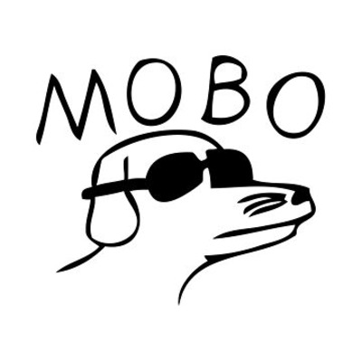

Bands I like
These are all bands that I enjoy listening to, they have a pretty unique style and that's something I appreciate. Modern Baseball is the only band in this list with a real "logo" for their band, Old Gray's picture that I chose is just the cover art of one of their albums. Hot Mulligan uses their pink text "logo" sometimes on merch and posters for their concerts.
Modern Baseball
Hot Mulligan